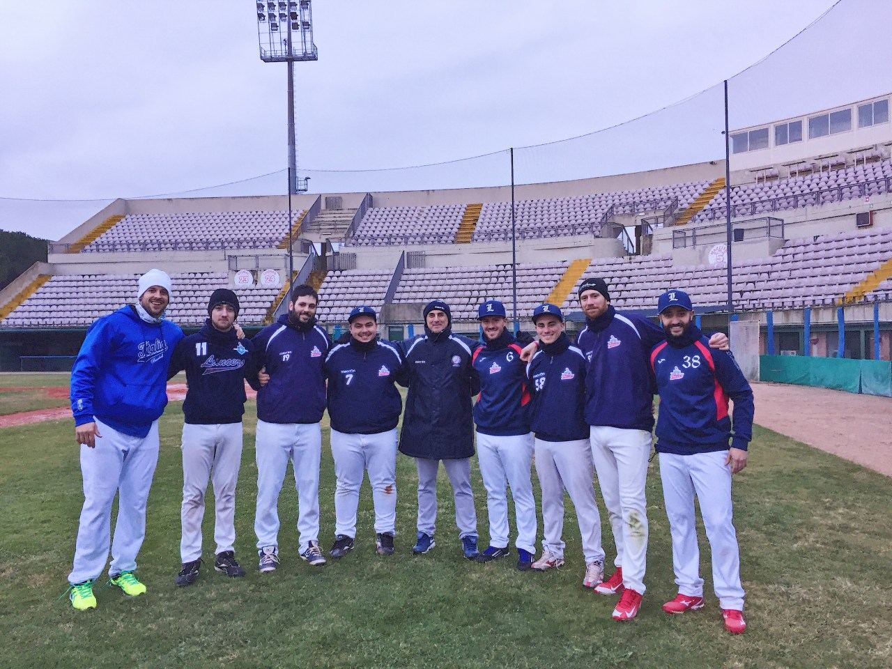
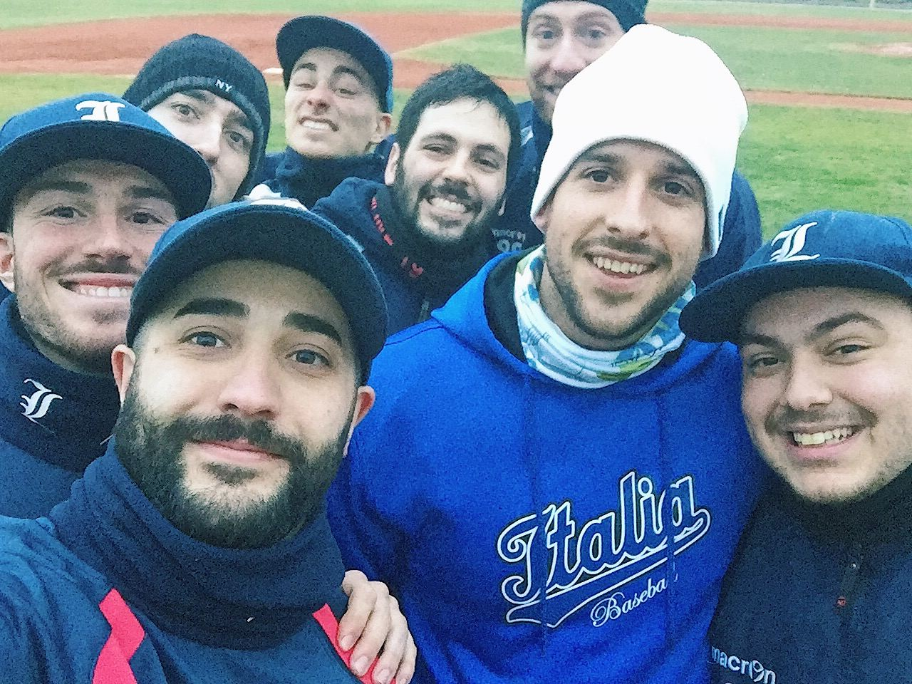

Organizzato dal professor Giovanni Natale, ricordiamo che il “prof” è da molti anni il preparatore atletico della nazionale italiana di Baseball, e la moglie Deborah, questo speciale corso ha avuto come relatori delle figure molto importanti nel mondo del Baseball & Softball.
Infatti lo stesso Natale ha curato nella prima ora la parte teorica della preparazione dei lanciatori basandosi sulla personale esperienza dell’Europeo 2012, nel quale il team azzurro è tornato dall’Olanda sia con la vittoria finale che con il risultato di miglior staff di lanciatori.
Gli altri relatori che si sono susseguiti sono Marco Mazzieri, attuale skipper dell’Italia, che ha parlato in particolar modo della battuta e Alex Liddi che ha curato la difesa.
Dobbiamo davvero presentarvi queste persone? Ok, ma solo questa volta.
Marco Mazzieri è un ex giocatore del Grosseto di Serie A1 con il quale ha vinto due scudetti, allena la nazionale Italiana maggiore da ben 10 anni con risultati importanti come 2 Europei vinti (2010 e 2012), la medaglia di bronzo nella Coppa Intercontinentale del 2010 e il passaggio di turno nell’ultimo WBC vincendo una partita al cardiopalma contro il Messico (VIDEO).

Nel pomeriggio, con qualche fiocco di neve a far da cornice, si è svolta la parte pratica sul campo dove Natale ha diretto prima la fase di riscaldamento con circuiti ed altri esercizi specifici, successivamente Mazzieri e Liddi hanno seguito il gruppo di atleti presenti con tecniche specifiche di allenamenti di battuta e di difesa.
Complimenti a Degl’Innocenti, Baratella, Geri, Becattini, Parrini, Nannucci ed Albano per avervi partecipato nonostante il viaggio e le temperature proibitive, per i più ma non per loro, e grazie di cuore a tutto lo staff composto oltre che da i sopracitati anche da tecnici di Grosseto molto qualificati.
Intanto gli allenamenti della prima squadra sono iniziati, fa freddo è vero ma pian piano si ricomincia a sentire il buon odore del “diamante”.
FORZA LANCERS!